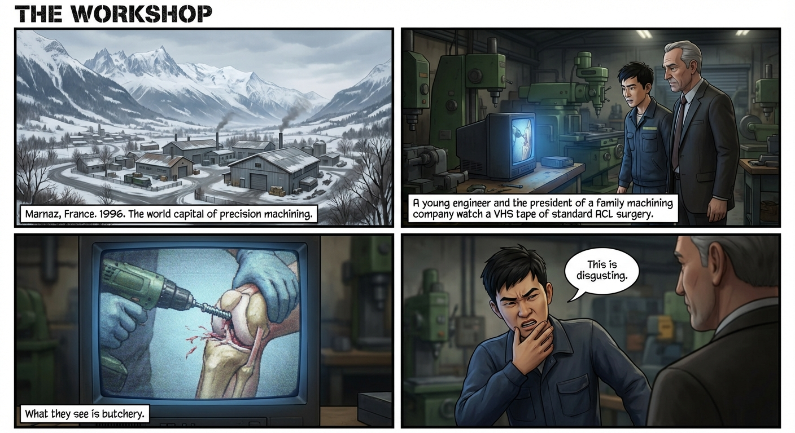
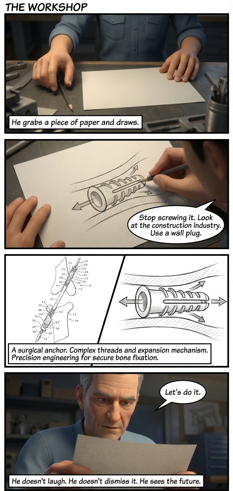
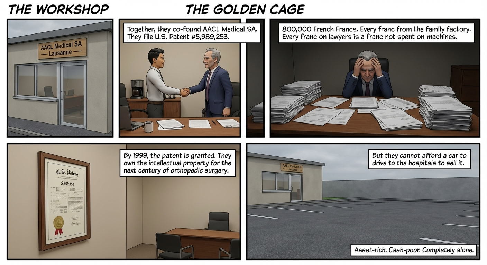
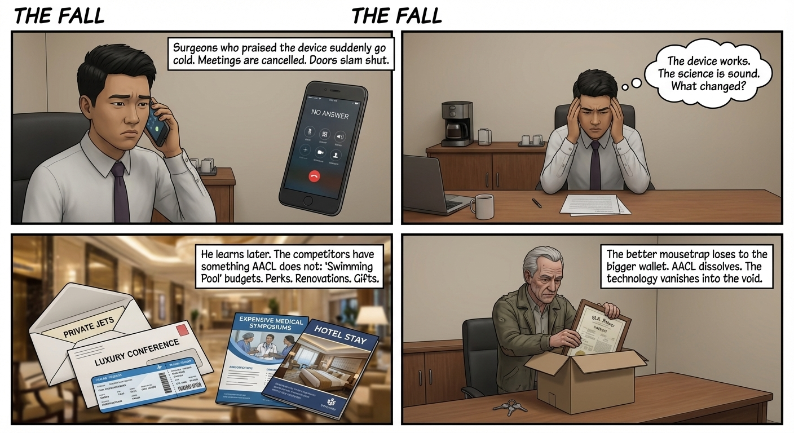
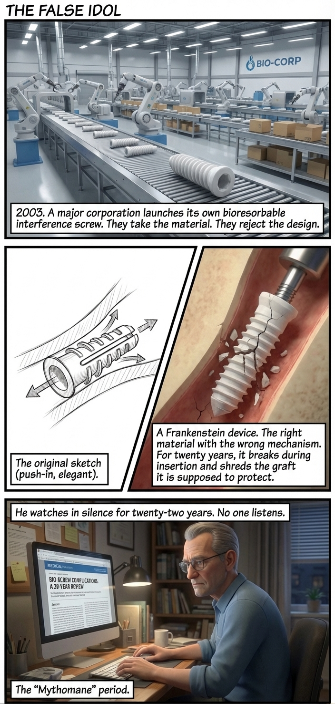
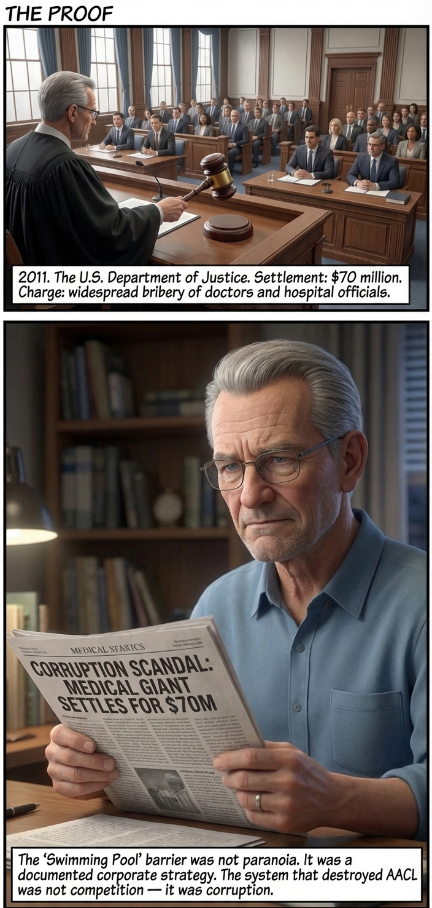
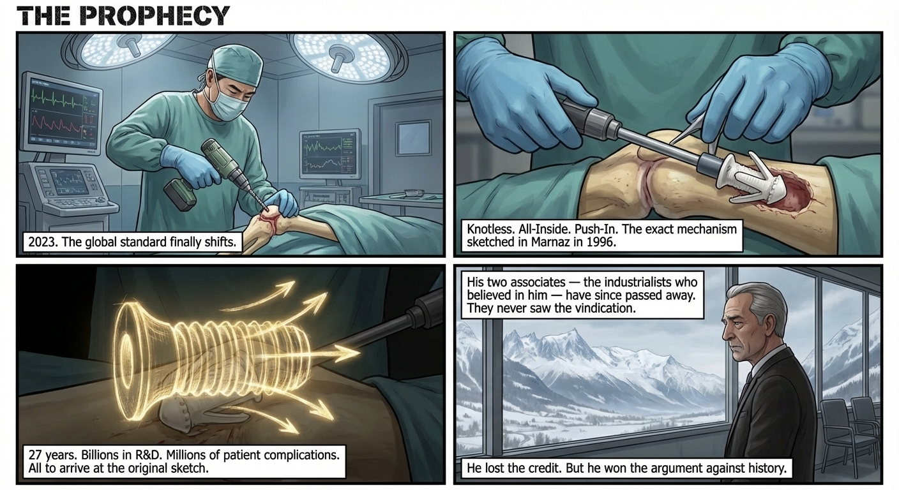
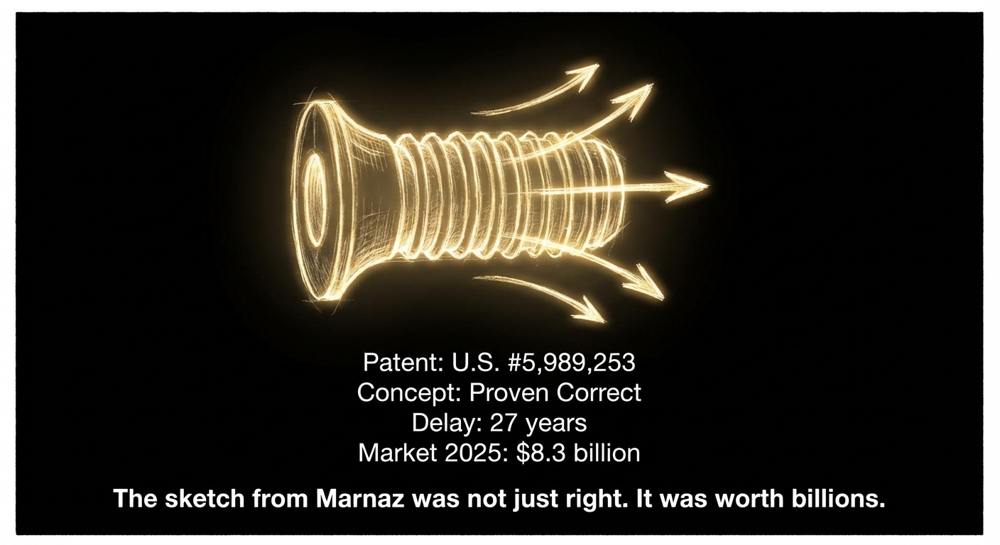

How the Future Was Sketched in 1996
AACL Medical SA · Vallée de l'Arve · Marnaz, France · U.S. Patent #5,989,253
This is the true story of how a breakthrough in the French Alps was suppressed, stripped for parts, and finally vindicated twenty-seven years later.
Marnaz, near Cluses, sits in the heart of the French Arve Valley — the world capital of precision machining, known locally as décolletage. For over a century, this narrow Alpine corridor has produced the smallest, most precise metal components on Earth. Watchmaking, aerospace, medical devices — all pass through these workshops.
It is here, inside the offices of a family-owned precision machining company, that the future of ligament surgery was sketched on a piece of paper by a 22-year-old engineer who had no idea he was about to lose everything.
A young engineer and the president of a family machining company sit together and watch a VHS tape of a standard ACL reconstruction. What they see is butchery. A surgeon forces a metal interference screw into a patient's knee, grinding through the bone tunnel, shredding the tendon graft in the process.
"C'est dégueulasse."
He grabs a piece of paper and draws. The sketch is simple — almost absurdly so:
"Stop screwing it. Look at the construction industry. Use a chevillère."
A chevillère — a wall plug. The kind used in every hardware store in France. You drill a hole, you push a ribbed plug in, and it expands to grip the wall. No rotation. No torque. No shearing.
The concept: a bioresorbable plug that is pushed straight into the bone tunnel. It expands on impact, locking the graft in place. 100% fixation, 0% rotation, 0% trauma to the graft.
The company president — a man who has spent his life shaping metal — looks at the sketch. He doesn't laugh. He doesn't dismiss it. He sees the future.
Together, they co-found AACL Medical SA in Lausanne, Switzerland.


The name is modest. The ambition is not. With AACL Medical SA now registered in Lausanne, they intend to replace the interference screw — the global standard in ligament reconstruction — with something fundamentally better.
But the patent system is slow and expensive. For three years, they fight for a single patent.
By the time the patent is granted in 1999, the company is financially exhausted. They own the intellectual property for the next century of orthopedic surgery.
But they cannot afford a car to drive to the hospitals to sell it.
AACL Medical SA is trapped in a golden cage: asset-rich, cash-poor, and completely alone.

Then something happens that changes everything — and seals their fate.
An international tender for $4 million USD is issued to modernize orthopedic hospitals. The specifications explicitly request "advanced bio-fixation" devices for clinical testing.
AACL Medical SA submits their Wall Plug prototype. The device performs exceptionally well in preliminary reviews. For the first time, the little company from Marnaz is on the international stage.
But this success is not a breakthrough. It is a signal flare — visible to everyone, including the giants.
The tender flags AACL on the radar of major multinational competitors. The existence of a superior, patented European device threatens their dominance in the global orthopedic market.
Representatives from the major conglomerates descend on the market.
Surgeons and procurement officers — who initially liked the AACL device, who praised its elegance — suddenly go cold. Meetings are cancelled. Calls go unanswered. Doors that were open slam shut.
The young engineer doesn't understand. The device works. The science is sound. What changed?
He learns later. The competitors have something AACL does not: what insiders call "Swimming Pool" budgets. Perks. Renovations. Consulting fees. Conference travel. Gifts that a small French startup from the Arve Valley cannot match — and cannot even comprehend.
The outcome: AACL is blocked from the market not by engineering failure, but by financial brute force. The better mousetrap loses to the bigger wallet.
The company president goes broke defending a patent he can no longer afford to market. The company dissolves. The technology — the sketch from 1996, the Wall Plug, the future of surgery — is absorbed into the void.

With AACL erased and the patent reduced to a ghost asset, the path is clear.
In 2003–2004, a major multinational launches its own bioresorbable interference screw. They use the bioresorbable logic pioneered by AACL — the idea that the implant should dissolve in the body.
But they reject the design.
To satisfy surgeons comfortable with the screwing motion, they build a bioresorbable screw — a Frankenstein device that combines the right material with the wrong mechanism.
For the next twenty years, this becomes the global standard. It is an imperfect hybrid that frequently breaks during insertion or shreds the graft it is supposed to protect.
The inventor watches in silence. He sees surgeons struggling with bio-screws, sees the complications pile up, sees the industry refuse to unlearn the "screwing" motion. He feels like a ghost — the father of a technology that, in his eyes, is being used wrongly.
This is the "Mythomane" period. For twenty-two years, the medical industry releases products that look like the invention but work incorrectly. And for twenty-two years, no one listens.

Then the truth surfaces — not through medicine, but through law.
The U.S. Department of Justice and SEC charge a major orthopedic conglomerate with widespread bribery of public doctors and hospital officials.
The investigation confirms exactly what the young engineer suspected in 1999.
The "Swimming Pool" barrier that AACL faced was not paranoia. It was not a conspiracy theory. It was a documented corporate strategy used during that exact era, in those exact markets, against competitors exactly like AACL.
Vindication: The $70 million settlement proved that the system that destroyed AACL was not competition — it was corruption.

Suddenly, the timeline corrects itself.
Around 2023, after two decades of complications, revisions, and broken bio-screws, the global orthopedic standard shifts. The major companies finally admit what the inventor said in 1996: screwing bio-material into bone is fundamentally flawed.
The new Gold Standard becomes Knotless, All-Inside, Push-In Anchors.
The mechanism is identical to the 1996 sketch: no threads, impact insertion, wall plug expansion.
Surgeons stop screwing. They punch a hole. They push a bio-composite anchor in. It expands to lock the graft.
In 2023, the medical world finally built the device that was sketched in Marnaz in 1996.

He was not a mythomane. He was not a dreamer spinning stories about a past that never was. He was simply an engineer who arrived at the destination twenty-seven years before the rest of the world packed their bags.
His two associates — both industrialists who believed in the invention and bet their livelihoods on it — have since passed away. They lost nearly everything financially. They never saw the vindication.
The inventor lost the credit, but he won the argument against history.
27 years later — the same 27 years — he returned to music. 1,000 tracks, every note played by hand. No generative AI. In a world racing to automate everything, he chose to keep the art human.
The engineer who builds AI agents by night refuses to let a machine play a single note for him.
A legacy of passion, integrity, and respect for the art.
| Concept | Proven Correct |
| Patent | U.S. #5,989,253 (Valid Prior Art) |
| Delay | 27 years |
| Legacy | The unseen foundation of modern ligament repair |

Vallée de l'Arve · Marnaz · France · 1996–2023